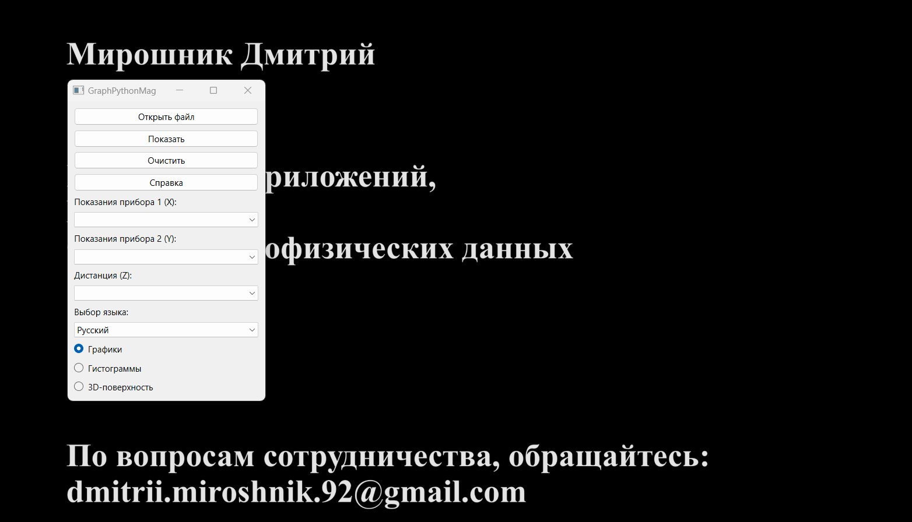
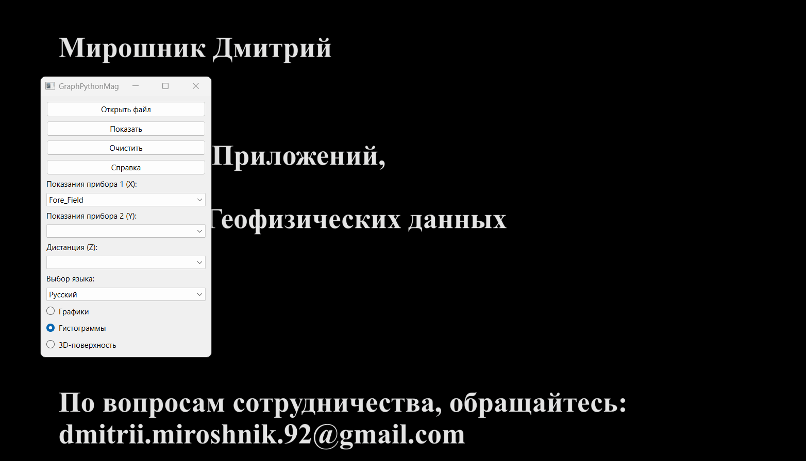

This application is designed for displaying various geophysical data.
It allows creating high-quality graphs, histograms, and 3D surfaces.
Any numerical data in tabular format saved in a CSV file can be used as input data.
Program Interface
Click the "Open" button to find and open the source CSV file.
Use the dropdown menu to select the relevant data.

To clear the data, click the "Clear" button.
To perform graphical plotting, click the "Show" button.
To switch the interface language, select one of the available languages from the "Language Selection" dropdown menu.
If you have any questions, you can seek help by clicking the "Help" button.
Graphs
Simple graphs are created using the Matplotlib scientific library.
The following types of graphs are implemented in this program:
Simple graph. To plot a simple graph, select the values of any one of the two columns: "Instrument 1 Readings" or "Instrument 2 Readings".
Combined graph. To compare the readings of two instruments, select the values for two columns: "Instrument 1 Readings" and "Instrument 2 Readings".
Distance-dependent graph. You can also combine various graph options depending on the distance. To do this, select the distance channel value from the "Distance" dropdown menu.
Histograms
The Seaborn library is used to create histograms of normal distribution.
Several options for displaying normal distribution are implemented in this program:
Simple histogram overlaid with a normal distribution curve.
To plot, select the values of any one of the two columns: "Instrument 1 Readings" or "Instrument 2 Readings".
Combined histograms. To compare readings, select values for two columns: "Instrument 1 Readings" and "Instrument 2 Readings".

Distribution of values depending on the distance. You can also combine various display options depending on the distance. To do this, select the distance channel value from the "Distance" dropdown menu.
Working with Matplotlib Window
The Matplotlib scientific graph window allows the user to perform various actions such as:
Dragging the graph;
Scaling;
Displaying the plot area;
Changing axis labels;
Changing color;
Saving the graph in the selected format, etc.
3D Surface
The Plotly library is used to create 3D surfaces.
To plot a surface, select all 3 columns: X, Y, and Z. !!!All coordinates must be in a rectangular system!!!
Working with 3D Surface Window
The 3D Surface window allows the user to perform various actions such as:
Dragging;
Scaling;
Rotation;
Reading data;
Saving the image in the selected format, etc.
Integration with OasisMontaj
This application allows working with any CSV file. However, as this program was created by order of AO "Yuzhmorgeologia",
let's discuss the process of exporting a database from OasisMontaj to a CSV file.
The steps in the OasisMontaj environment are as follows:
Database / Export / CSV etc...;
Select save parameters;
Click "Ok".
Feedback
GraphPythonMag v 1.2.1
Author: Dmitrii Miroshnik
Application development
Web design
Processing geophysical data
For cooperation inquiries: dmitrii.miroshnik.92@gmail.com.
You can also express gratitude to the Author.
I will be glad to receive support and feedback!